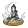

宗门 · 建筑面板（原型）
小宗门0
中等宗门30
大宗门180
顶级宗门450
仙门1200
锻造部
驻守 3/5
产出素材
无升级
（仅靠弟子驻守）
—

传功阁
驻守 2/5
弟子修炼 +%
●●●○○
Lv3/5
弟子修炼 +18%（灵气获取）
藏经阁
驻守 1/3
功法研究（提高功法掉落）
无升级
（仅靠弟子驻守）
—
宝库
驻守 0/3
装备掉落 +%
○○○○
Lv0/4
从传承池提取装备便宜 20%

传承殿
驻守 2/3
传承品级 +
○○○
Lv0/3
直传传承位 +1（3 → 4）
延寿丹房
驻守 0/3
为驻宗弟子续命
○○○
Lv0/3
弟子寿元 +5 年（延寿丹）
需 顶级宗门
议事堂
驻守 1/2
秘境情报（提高倾向命中）
无升级
（仅靠弟子驻守）
—
● = 已升级 ○ = 未升级 · 驻守 = 弟子岗位人数
驻守靠分派弟子、升级靠荣誉点，两条线各自独立、效果叠加
驻守靠分派弟子、升级靠荣誉点，两条线各自独立、效果叠加